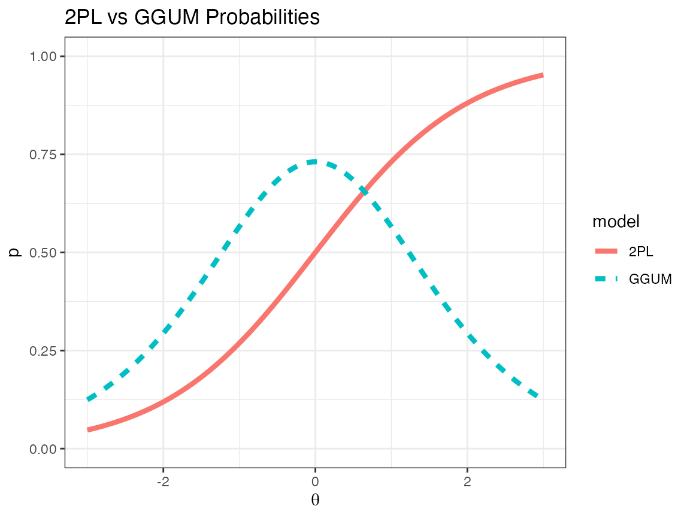
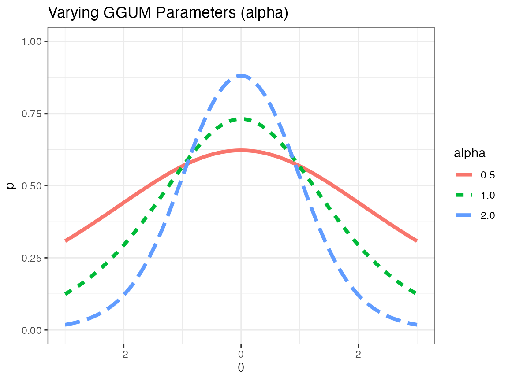
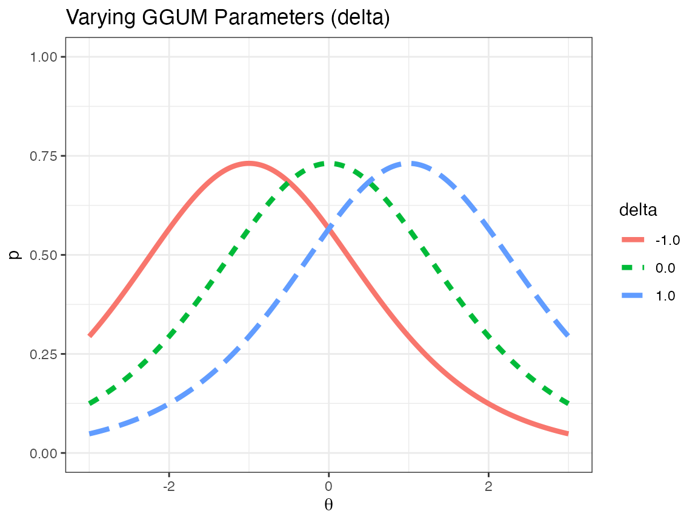
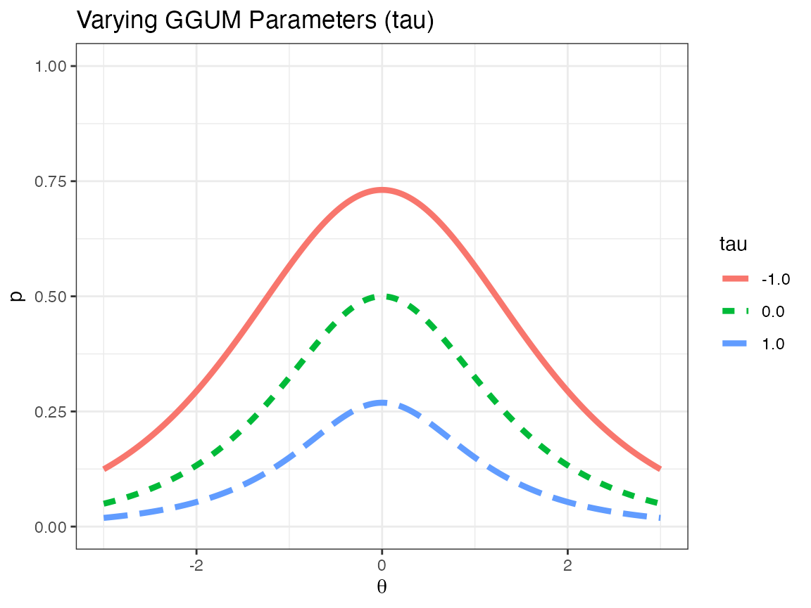
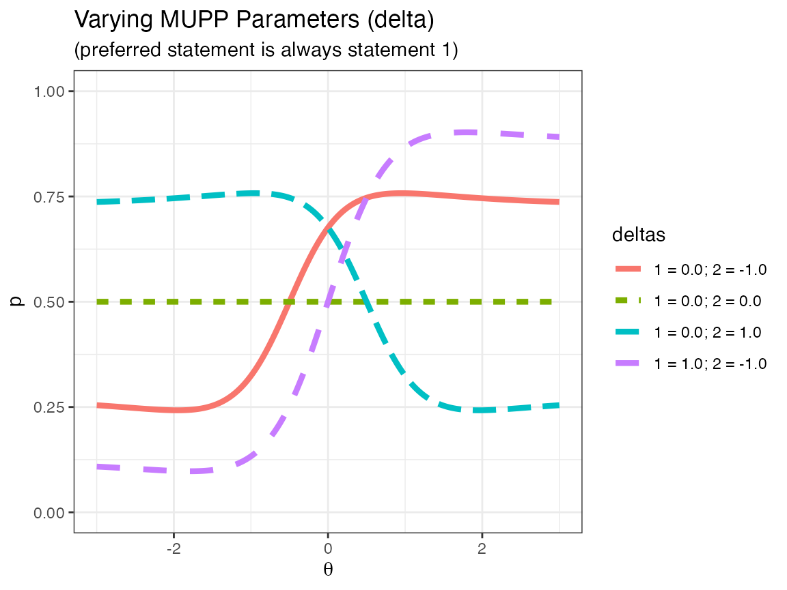

vignettes/mupp-derivatives.Rmd
mupp-derivatives.RmdThis vignette is designed to provide the equations used in the mupp package and derive some of the first and second derivatives necessary for estimating item and person parameters.
The generalized graded unfolding model (GGUM) is an ideal point item response theory (IRT) model (de la Torre, Stark, & Chernyshenko, 2006). Unlike many IRT models for achievement tests that assume higher ability results in a higher likelihood of endorsing an item, ideal point models assume that a person is most likely to endorse an item only if they have a particular trait level 1. Trait levels higher or lower than the item location are assumed equally likely to endorse the item. We can compare the two-parameter IRT model (2PL) with the GGUM in the following display.

Note that in both models, the “location” parameter (\(b\) in the 2PL and \(\delta\) in the GGUM model) is set to 0. However, the meaning of location differ between models. For the 2PL, location refers to the inflection point of the IRT function (i.e., the point at which the slope is at its maximum). However, with respect to the GGUM model, the location refers not to the point at which the change in probability is at a maximum but, instead, the point at which the probability itself is greatest.
The standard two-choice GGUM model takes the following form:
\[ P_{\text{ggum}} = P(X = 1 \, | \, \theta, \alpha, \delta, \tau) = \frac{\exp(\alpha[ (\theta - \delta) - \tau]) + \exp(\alpha[2(\theta - \delta) - \tau)])} {1 + \exp(\alpha[ (\theta - \delta) - \tau]) + \exp(\alpha[2(\theta - \delta) - \tau)]) + \exp(\alpha[3(\theta - \delta)])} \]
with \(\alpha\) designating the slope of the model (relating to the steepness of the curve as \(\theta \to \delta\)), \(\delta\) indicating the ideal point of the model, and \(\tau\) representing the overall assent probability across all \(\theta\). One can think of the GGUM model as an ocean, with \(\alpha\) the height of the wave, \(\delta\) the location of the wave, and \(\tau\) the overall depth of the ocean. The following pictures indicate how changes to \(\alpha\), \(\delta\), and \(\tau\) affect the item response function.



As can easily be seen in the above plots, changing \(\alpha\) changes the peakedness of the hump, changing \(\delta\) changes the location of the hump, and changing \(\tau\) changes the overall height of the entire distribution.
To determine the derivative of the GGUM (with respect to \(\theta\)), define the following expressions:
\[ \begin{align} x &= \exp(\alpha[ (\theta - \delta) - \tau])\\ y &= \exp(\alpha[2(\theta - \delta) - \tau)])\\ z &= \exp(\alpha[3(\theta - \delta)]) \end{align} \]
Due to properties of the exponential function, the individual derivatives are as follows:
\[ \begin{align} \frac{dx}{d\theta} &= 1\alpha\times x\\ \frac{dy}{d\theta} &= 2\alpha\times y\\ \frac{dz}{d\theta} &= 3\alpha\times z \end{align} \]
Using the division rule, the derivative of \(P_{\text{ggum}}\) with respect to \(\theta\) is as follows:
\[ \begin{align} \frac{dP_{\text{ggum}}}{d\theta} &= \frac{d\left(\frac{(x + y)}{(1 + x + y + z)}\right)}{d\theta}\\ &= \frac{(1 + x + y + z)\left(\frac{d(x + y)}{d\theta}\right) - (x + y)\left(\frac{d(1 + x + y + z)}{d\theta}\right)}{(1 + x + y + z)^2}\\ &= \frac{(1 + x + y + z)(\alpha(x + 2y)) - (x + y)(\alpha(x + 2y + 3z))}{(1 + x + y + z)^2}\\ &= \frac{(1 + z)(\alpha(x + 2y)) - (x + y)(\alpha(3z))}{(1 + x + y + z)^2}\\ &= \frac{\alpha(x + zx + 2y + 2zy - 3xz - 3yz)}{(1 + x + y + z)^2}\\ &= \frac{\alpha[x(1 - 2z) + y(2 - z)]}{(1 + x + y + z)^2} \end{align} \]
with \(x\), \(y\), and \(z\) defined above.
The second derivative does not simplify as well, but one can still come up with a general form. First define the following relations:
\[ \begin{align} N &= \alpha[x(1 - 2z) + y(2 - z)]\\ R &= (1 + x + y + z)^2 \end{align} \]
Then using the properties above, it can easily be shown that
\[ \begin{align} \frac{dN}{d\theta} &= \alpha[x(-6\alpha z) + (1 - 2z)(\alpha x) + y(-3\alpha z) + (2 - z)(2\alpha y)]\\ &= \alpha^2[-6xz + x - 2xz - 3yz + 4y - 2yz]\\ &= \alpha^2[x - 8xz + 4y - 5yz]\\ &= \alpha^2[x(1 - 8z) + y(4 - 5z)]\\ \frac{dR}{d\theta} &= 2\alpha(1 + x + y + z)(x + 2y + 3z) \end{align} \]
And the second derivative can be constructed as follows:
\[ \frac{d^2P_{\text{ggum}}}{d\theta^2} = \frac{R\left(\frac{dN}{d\theta}\right) - N\left(\frac{dR}{d\theta}\right)}{R^2} \]
with the above equations plugged in. This is not a particularly simple functional form, but the analytic version of the second derivative does not seem to simplify to a more computationally efficient form.
Given two (or more) probability statements, one can rank them in terms of how they apply to any particular person. The multi-unidimensional pairwise preference model (MUPP; Stark, Chernyshenko, & Drasgow, 2005) was developed to model the likelihood of choosing one statement over another. These statements can depend on the same personality trait (\(\theta_1 = \theta_2 = \theta\)) or different personality traits (\(\theta_1 \neq \theta_2\)). Given two statements (\(s_1\) and \(s_2\)) which depend on one-to-two traits (\(\theta_1\) and \(\theta_2\)) and a probability model of agreeing to either statement on its own (\(P_{s_1}\) and \(P_{s_2}\), which have similar functional forms with different item parameters), the probability of choosing statement one over statement two can be modeled by the following item response function:
\[ \begin{align} P_{\text{mupp}}(s_1 > s_2) &= P(s_1 > s_2 | \theta_{d_{s_1}}, \theta_{d_{s_2}})\\ &\approx \frac{P(X = 1|\theta_{d_{s_1}})P(X = 0|\theta_{d_{s_2}})} {P(X = 1|\theta_{d_{s_1}})P(X = 0|\theta_{d_{s_2}}) + P(X = 0|\theta_{d_{s_1}})P(X = 1|\theta_{d_{s_2}})} \end{align} \]
A few caveats and properties of the above probability function are as follows:
The following plot displays the IRF of several one-dimensional probability functions (with individual statements based on the GGUM model).

Based on the above graphic, note that in the one-dimensional case, any person is most likely to prefer a statement with \(\delta\) closest to \(\theta\) regardless of whether or not \(\theta > \delta\) or \(\theta < \delta\). These probabilities obviously can change if \(\alpha_1 \neq \alpha_2\) or \(\tau_1 \neq \tau_2\), but the general functional form of the IRF is the same. Moreover, if two statements have the same \(\delta\), then the probability is a constant for all \(\theta\). Note that “constant probability” does not mean “.5 probability”. If \(\tau_1 > \tau_2\), then statement 1 is always (probabilistically) prefered to statement 2, so in that case, the IRFs above would be uniformly higher.
To determine the derivative of the MUPP model (with respect to \(\theta\)), define the following expressions:
\[ \begin{align} A &= P(X = 1|\theta_{d_{s_1}}) & A' &= \frac{dP(X = 1|\theta_{d_{s_1}})}{d\theta} & A'' &= \frac{d^2P(X = 1|\theta_{d_{s_1}})}{d\theta^2}\\ B &= P(X = 0|\theta_{d_{s_2}}) & B' &= \frac{dP(X = 0|\theta_{d_{s_2}})}{d\theta} & B'' &= \frac{d^2P(X = 0|\theta_{d_{s_2}})}{d\theta^2}\\ C &= 1 - A & C' &= \frac{dC}{d\theta} = -A'\\ D &= 1 - B & D' &= \frac{dD}{d\theta} = -B'\\ \end{align} \]
Then the MUPP IRF can be re-defined as follows:
\[ P_{\text{mupp}} = \frac{AB}{AB + CD} \]
For the rest of the derivation, assume \(\theta_1 \neq \theta_2\). If \(\theta_1 = \theta_2\), then the derivative is simply the sum of all gradient elements, and the second derivative is simply the sum of all hessian elements.
Using the division rule, the derivative of \(P_{\text{mupp}}\) with respect to \(\theta_1\) is as follows 2:
\[ \begin{align} \frac{dP_{\text{mupp}}}{d\theta_1} &= \frac{d\left(\frac{AB}{AB + CD}\right)}{d\theta_1}\\ &= \frac{(AB + CD)(AB)' - (AB)(AB + CD)'}{(AB + CD)^2}\\ &= \frac{(AB + CD)(A'B) - (AB)(A'B + C'D)}{(AB + CD)^2}\\ &= \frac{AA'B^2 + A'BCD - AA'B^2 - ABC'D}{(AB + CD)^2}\\ &= \frac{BD(A'C - AC')}{(AB + CD)^2}\\ &= \frac{BD[A'(1 - A) - A(-A')]}{(AB + CD)^2}\\ &= \frac{BDA'}{(AB + CD)^2} \end{align} \]
Note that the derivative of \(P_{\text{mupp}}\) with respect to \(\theta_2\) is clearly:
\[ \frac{dP_{\text{mupp}}}{d\theta_2} = \frac{ACB'}{(AB + CD)^2} \]
The second derivative is a hessian matrix with four elements:
Note that the third and fourth elements are the same because, in this case:
\[ \frac{d^2P_{\text{mupp}}}{d\theta_1\theta_2} = \frac{d^2P_{\text{mupp}}}{d\theta_2\theta_1} \]
Moreover, the first and second elements are found using an identical process with \(A\) and \(B\) swapped, \(C\) and \(D\) swapped, and all of the derivatives/second derivatives of the GGUM model also swapped. Therefore, we only really have two derivations.
The diagonal of the hessian matrix can be constructed as follows:
\[ \begin{align} \frac{d^2P_{\text{mupp}}}{d\theta_1^2} &= \frac{d\left(\frac{BDA'}{(AB + CD)^2}\right)}{d\theta_1}\\ &= \frac{(AB + CD)^2(BDA')' - (BDA')[(AB + CD)^2]'}{(AB + CD)^4}\\ &= \frac{(AB + CD)^2(BDA'') - (BDA')[2(AB + CD)(A'B + C'D)]}{(AB + CD)^4}\\ &= \frac{(AB + CD)[(AB + CD)(BDA'') - 2(A'B + C'D)(BDA')]}{(AB + CD)^4}\\ &= \frac{BD[A''(AB + CD) - 2A'(A'B + C'D)]}{(AB + CD)^3}\\ &= \frac{BD[A''(AB + CD) - 2A'(A'B - A'(1 - B))]}{(AB + CD)^3}\\ &= \frac{BD[A''(AB + CD) - 2(A')^2(2B - 1)]}{(AB + CD)^3} \end{align} \]
Note that the second derivative of \(P_{\text{mupp}}\) with respect to \(\theta_2\) is clearly:
\[ \frac{d^2P_{\text{mupp}}}{d\theta_2^2} = \frac{AC[B''(AB + CD) - 2(B')^2(2A - 1)]}{(AB + CD)^3} \]
Finally, the off-diagonals of the Hessian matrix are as follows:
\[ \begin{align} \frac{d^2P_{\text{mupp}}}{d\theta_1\theta_2} &= \frac{d\left(\frac{BDA'}{(AB + CD)^2}\right)}{d\theta_2}\\ &= \frac{(AB + CD)^2\left(\frac{d(BDA')}{d\theta_2}\right) - (BDA')\left(\frac{d(AB + CD)^2}{d\theta_2}\right)}{(AB + CD)^4}\\ &= \frac{(AB + CD)^2\left(\frac{d(A'[B - B^2]}{d\theta_2}\right) - (BDA')\left(\frac{d(AB + CD)^2}{d\theta_2}\right)}{(AB + CD)^4}\\ &= \frac{(AB + CD)^2A'(B' - 2BB') - (BDA')[2(AB + CD)(AB' + CD')]}{(AB + CD)^4}\\ &= \frac{(AB + CD)[(AB + CD)[A'B'(1 - 2B)] - 2A'BD[B'(2A - 1)]}{(AB + CD)^4}\\ &= \frac{(AB + CD)[A'B'(1 - 2B)] - 2A'BD[B'(2A - 1)]}{(AB + CD)^3}\\ &= \frac{A'B'[(AB + CD)(1 - 2B) - 2BD(2A - 1)]}{(AB + CD)^3}\\ &= \frac{A'B'[AB + CD - 2AB^2 - 2BCD - 4ABD + 2BD]}{(AB + CD)^3}\\ &= \frac{A'B'[AB + 1 - A - B + AB - 2AB^2 - 2B(1 - A - B + AB) - 4AB(1 - B) + 2B(1 - B)]}{(AB + CD)^3}\\ &= \frac{A'B'[AB + 1 - A - B + AB - 2AB^2 - 2B + 2AB + 2B^2 - 2AB^2 - 4AB + 4AB^2 + 2B - 2B^2]}{(AB + CD)^3} \end{align} \]
Rearranging the terms in the numerator of the last statement, we can see that most of them cancel, and we have:
\[ \begin{align} \frac{d^2P_{\text{mupp}}}{d\theta_1\theta_2} &= \frac{A'B'[(1 - A - B) + (4AB + 2B + 2B^2 + 4AB^2) - (4AB + 2B + 2B^2 + 4AB^2)]}{(AB + CD)^3}\\ &= \frac{A'B'(1 - A - B)}{(AB + CD)^3} \end{align} \]
Therefore, if statement 1 is preferred to statement 2, the gradient vector is:
\[ \boldsymbol{g}(P_{\text{mupp}}) = \frac{dP_{\text{mupp}}}{d\boldsymbol{\theta}} = \begin{bmatrix} \frac{BDA'}{(AB + CD)^2}\\ \frac{ACB'}{(AB + CD)^2} \end{bmatrix} \]
and the hessian matrix is:
\[ \boldsymbol{H}(P_{\text{mupp}}) = \frac{dP_{\text{mupp}}}{d\boldsymbol{\theta}\boldsymbol{\theta^T}} = \begin{bmatrix} \frac{BD[A''(AB + CD) - 2(A')^2(2B - 1)]}{(AB + CD)^3} & \frac{A'B'(1 - A - B)}{(AB + CD)^3}\\ \frac{A'B'(1 - A - B)}{(AB + CD)^3} &\frac{AC[B''(AB + CD) - 2(B')^2(2A - 1)]}{(AB + CD)^3} \end{bmatrix} \]
The MUPP model can be extended to the case of comparing more than two statements. The most common extension of the MUPP model (for this case) is called the MUPP-Rank model (Lee, 2016). In the MUPP-Rank model, the probability of ranking statements \(1, 2, 3, \dots\) in a given order determined by \(s_1, s_2, s_3, \dots\) is simply
\[ \begin{align} P_{\text{mupp-rank}}(s_1 > s_2 > s_3 > \dots) &= P(s_1 > [s_2, s_3, \dots] \, | \, \theta_{d_{s_1}}, \theta_{d_{s_2}}, \theta_{d_{s_3}}, \dots)\times P(s_2 > [s_3, \dots] \, | \, \theta_{d_{s_2}}, \theta_{d_{s_3}}, \dots) \times \dots\\ &=\prod_{k = 1}^{K} P(s_k > [s_{k + 1}, s_{k + 2}, \dots, s_{K}] \, | \, \theta_{d_{s_k}}, \theta_{d_{s_{k + 1}}}, \dots, \theta_{d_{s_K}}) \end{align} \]
In the above equation, the individual probability statements are an extension of the MUPP (choosing 1 statement over all of the others) for more than two statements, assuming independence. In that case, the numerator is simply the product of choosing a statement and not choosing the others (using the products of the probabilities), and the denominator is the sum of the probabilities of choosing any given statement over the others. If \(K = 3\), then the numerator is a single element (e.g., choose statement 1 rather than 2 or 3) and the denominator is three elements (choose statement 1 rather than 2 or 3, choose statement 2 rather than 1 or 3, and choose statement 3 rather than 1 or 2). In this case, there are \(3! = 6\) possible rankings of statements. If \(K = 4\), there would be \(4! = 24\) possible rankings of statements. In each case, there would be \(K!\) item response functions. The derivative and second derivative of the MUPP-Rank model would be theoretically simple but difficult to derive for the general case or efficiently code for all but the simplest of problems. See Lee (2016) for derivations in the \(K = 3\) case.
The GGUM model is technically a polytomous model with (possibly) more than two response options and “probability” referring to the probability of marking any one of the options. For the remainder of this document, we are considering the GGUM with only two response options: assent to statement or do not assent to statement.↩︎
The remaining formulas use prime notation (\(A'\)) for the derivative rather than Leibniz’s notation (\(\frac{dA}{d\theta}\)). Using prime notation simplifies the appearance of the derivation. Leibniz’s notation is used when prime notation would be ambiguous.↩︎